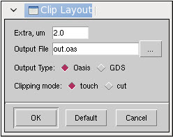

Follow this procedure
to create a reduced version of the layout file. The use of a clipped
file should increase the computation speed, since the clipping function only
keeps relevant sections of test pattern structures around the gauges.
Procedure
- Invoke
CM1 Center ( menu
item in Calibre WORKbench).
- Load the
gauge object ( menu item).
- Invoke
the Clip Layout utility ( menu
item).
- In the dialog box that appears:
- Set the radius around the
gauges to be clipped in microns.
- Set the behavior used when
objects lie only partially inside the clipping box (“touch” preserves
the object, “cut” clips the parts of the object lying outside the
clipping box)
- Specify an output filename.
- Click OK to
run the command.
Figure 1. Clip Layout Dialog Box
Results
CM1 Center creates clips on the layout for all active gauges,
and saves them to a new layout file.
Note: The new
layout may not contain all the layers from the source design file. However,
if the design file contains contour data and a valid Contour Layer
Information file is loaded in the Contour tab,
clip layer areas are included in the output.